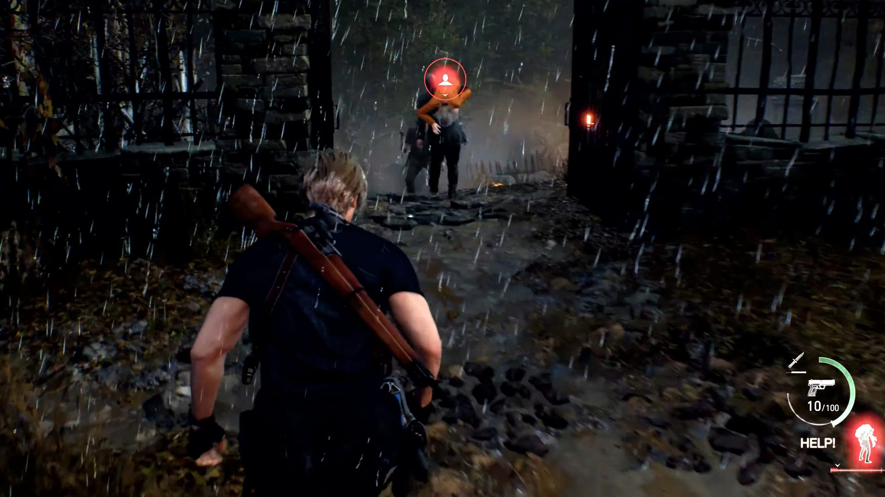
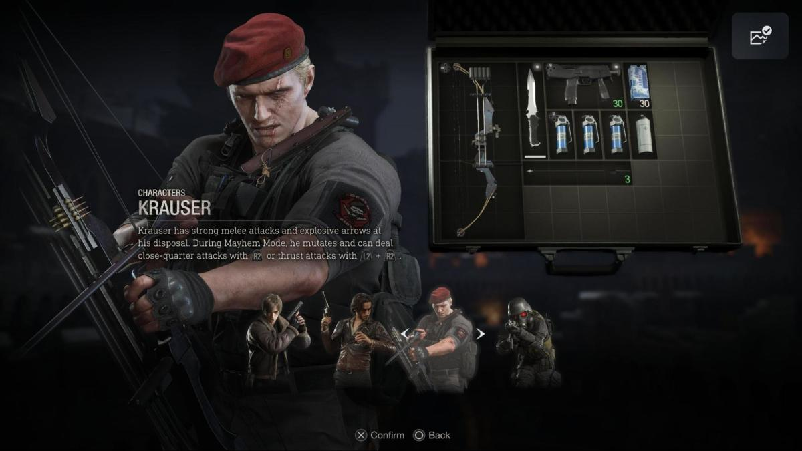
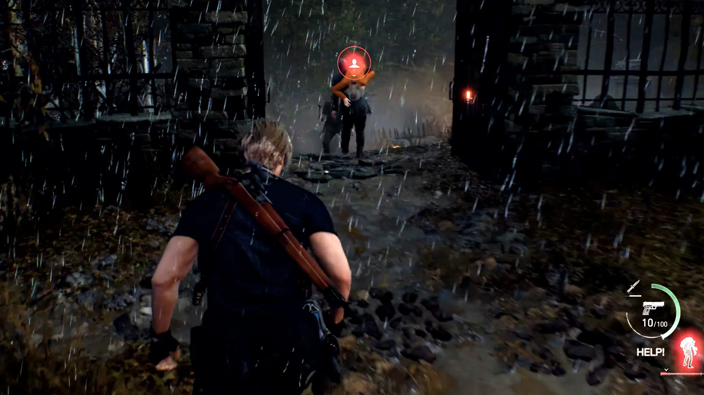
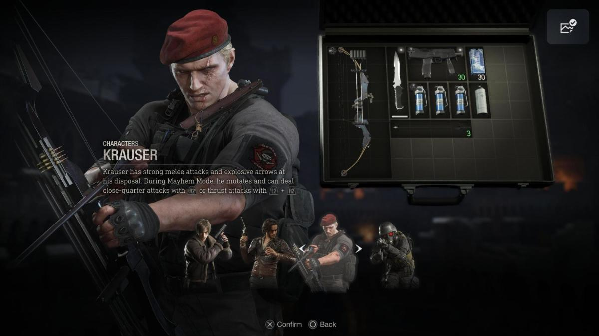

Resident Evil 4 Remake
Información del juego
Resident Evil 4 —cuyo título original en Japón es Biohazard RE:4 (バイオハザード Baiohazādo Fō?)—a es un videojuego de acción-aventura de disparos en tercera persona perteneciente
al subgénero de terror y supervivencia desarrollado y publicado por Capcom. Un remake del juego de 2005 Resident Evil 4, fue lanzado
para PlayStation 4, PlayStation 5, Windows y Xbox Series X/S el 24 de marzo de 2023. Las versiones para iOS y Mac OS se lanzaron el
20 de diciembre de 2023.
Resident Evil 4 es un remake del Resident Evil 4 original del 2005.
Los jugadores controlan al agente estadounidense Leon S. Kennedy, que debe salvar a Ashley Graham, la hija del presidente de los Estados Unidos, del misterioso culto de Los Iluminados.
El remake tiene una trama actualizada, nuevas imágenes, personajes, elenco y jugabilidad alterada.
Survival Horror de última generación reimaginado para el año 2023.
Resident Evil 4 recibió elogios de la crítica y fue nominada para el Golden Joystick Award al Ultimate Game Of The Year y The Game Award al Juego del Año. El juego había vendido 6,48 millones de unidades
en diciembre de 2023, lo que la convierte en la entrega más vendida de la serie.
Resident Evil 4 conserva la esencia del juego original, a la vez que introduce mecánicas de juego actualizadas,
una historia reimaginada, e impresionantes gráficos de última generación que lo convierten en la experiencia de
Survival Horror definitiva en la cual se cruzan la vida y la muerte, el terror y la catarsis.
Resident Evil 4, el legendario survival horror de 2005, se renueva completamente en este remake.
Seis años después de los eventos de Resident Evil 2, el sobreviviente de Raccoon City, Leon Kennedy, se encuentra apostado
en un recóndito pueblo de Europa para investigar la desaparición de la hija del presidente de los Estados Unidos. Lo que
descubre allí no se parece a nada que haya enfrentado antes.
Todos los aspectos del juego clásico se han actualizado para la generación actual, desde gráficos y controles modernizados,
hasta una historia reinventada que puede sorprender incluso a los fanáticos del juego original.
La nueva versión de Resident Evil 4 presenta una jugabilidad similar a su inmediato predecesor Resident Evil 3 (videojuego de 2020),
siendo que el nuevo videojuego se lleva a cabo en una perspectiva en tercera persona con la cámara sobre el hombro muy similar a la
cámara de Resident Evil 2 (videojuego de 2019); los lugares del videojuego original también han sido rediseñados, alterando o reimaginando parcialmente
varias zonas, y agregando nuevos lugares, utilizando un sistema de mapa similar pero más detallado. También se mantiene el sistema de
curación por hierbas y el estado de salud original, el sistema de administración de recursos en maletín se mantiene al igual que
la mayoría de objetos y recursos, ajustados en un sistema de inventario idéntico al ya visto en Resident Evil Village y Resident Evil 4.
Reseñas
IGN
Increíble
El mejor remake de Resident Evil
"Resident Evil 4: Remake logra mejorar la propuesta original convirtiéndose en uno de los mejores títulos de la saga por méritos propios."
"La sensación una vez terminamos la primera vuelta y vemos que hay un modo nueva partida+ del que, adivinad, tampoco podemos deciros nada, es que Capcom ha
logrado hacer el mejor remake de un episodio de la saga hasta la fecha. Algo que parecía muy difícil después de Resident Evil 2:
Remake pero que han logrado de nuevo con un título protagonizado por Leon S. Kennedy. Se ve que el muchacho le da buena suerte a la
compañía. Pocas, muy pocas pegas se le pueden poner al remake más allá de la ausencia de las misiones de Ada Wong, una pena no tener
'remaqueado' este contenido; o la ausencia de la animación de las patadas a las puertas, que me ha hecho pulsar un par de veces el
botón de acción para nada."
"9 / 10"
Metacritic
Aclamado universalmente
"Basado en 132 reviews de críticas."
"Resident Evil 4 Remake no solo hace lo correcto con su fuente de inspiración original, sino que también establece un listón
muy alto sobre lo que pueden ser los remakes modernos. Todos los componentes de la historia se han perfeccionado en un paquete
mejor pensado, y eso sin mencionar el uso completo que hace el juego de la destreza gráfica actual para ofrecer una interpretación
más aterradora de la España rural. La jugabilidad principal también conserva lo que lo hizo tan grandioso en su día, pero con
comodidades modernas como un sistema de parada, selección rápida de armas y la capacidad de correr. Y a pesar de las nuevas mejoras,
la mayor agresividad de los enemigos garantiza que el juego nunca se sienta pan comido. No sé a quién todavía
hay que convencer a estas alturas, pero Resident Evil 4 es una obra maestra que no puedo recomendar lo suficiente."
"93 / 100"
LevelUp
Joya que no pierde lustro
"La atmósfera del remake, por su parte, es tenebrosa y se combina perfectamente con el tono sombrío y de acción presente. En algunos momentos, los canticos ceremoniales resuenan a lo lejos mientras te deslizas por senderos
llenos de misterio. Estos lugares es donde la nueva generación muestra su poder, ofreciendo vistas y escenarios cuidadosamente detallados. Y después de un combate, te quedarás asombrado por la calidad visual del juego, que se realza gracias al trabajo de ambientación, sombras y neblina del ambiente.
Es una joya visualmente impactante.
Dicho esto, el remake de Resident Evil 4 fue justo lo que queríamos ver. Mantuvo lo adecuado y necesario, al mismo tiempo
que cambió algunas cosas y dejó otras atrás. La franquicia ahora tiene un nuevo clásico gracias a este remake, que sirve
como punto de introducción para una nueva generación ya que mantiene la magia original. Incluso los veteranos del juego
se sentirán constantemente en un estado de tensión y miedo, gracias a la fresca dinámica que experimentan al mismo tiempo
que conocen lo que sigue más adelante. Es emocionante vivir el juego de esta manera."
Imágenes y capturas del juego

 


